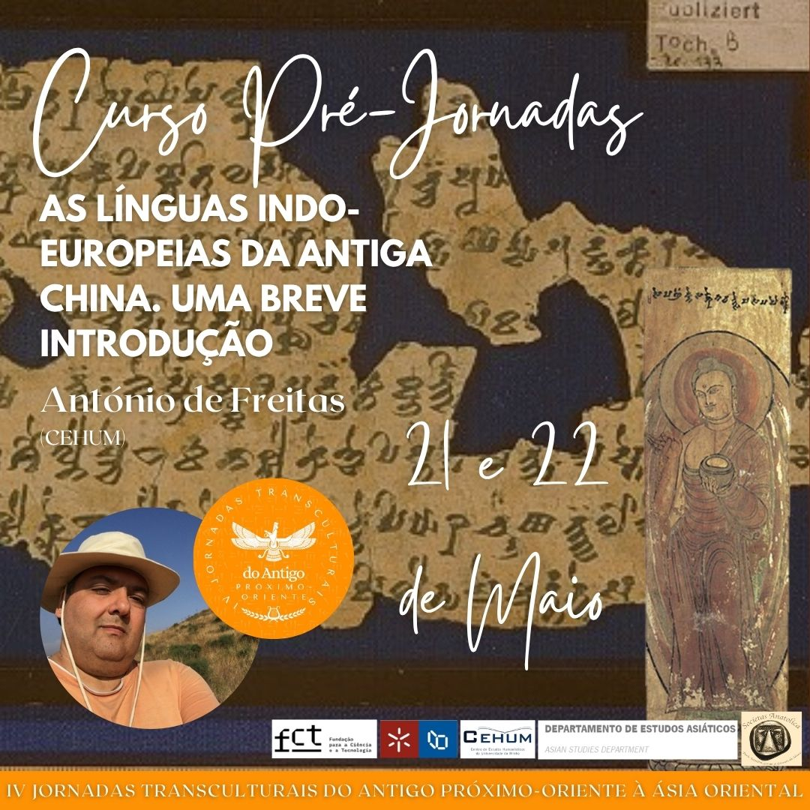
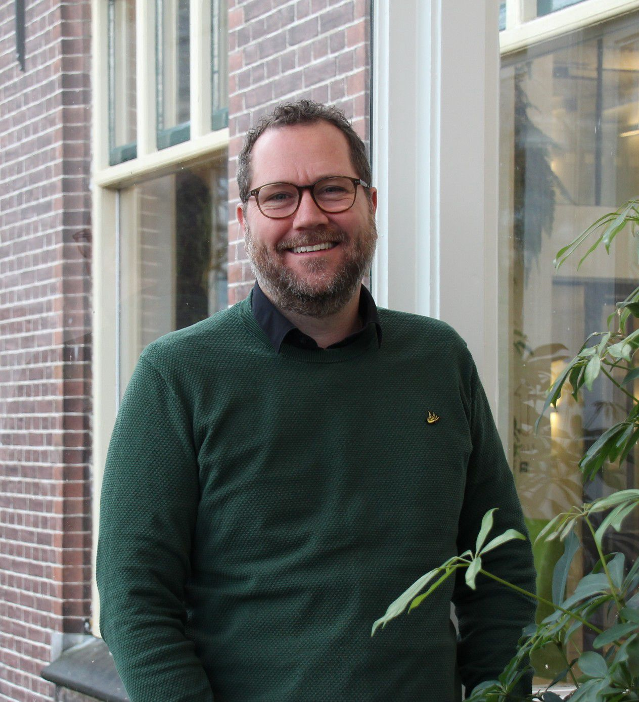
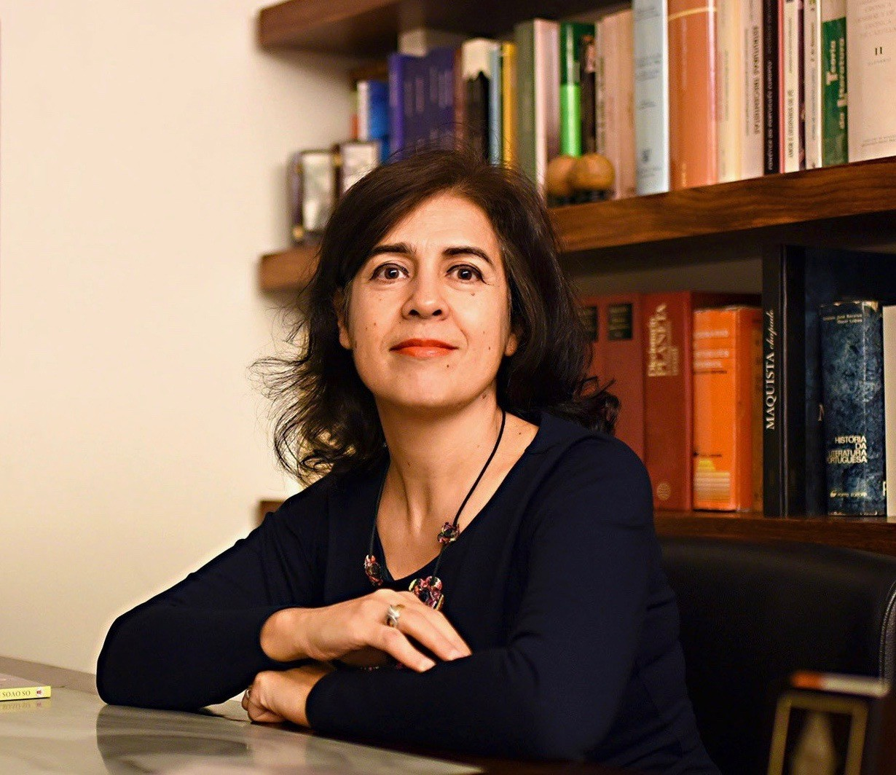
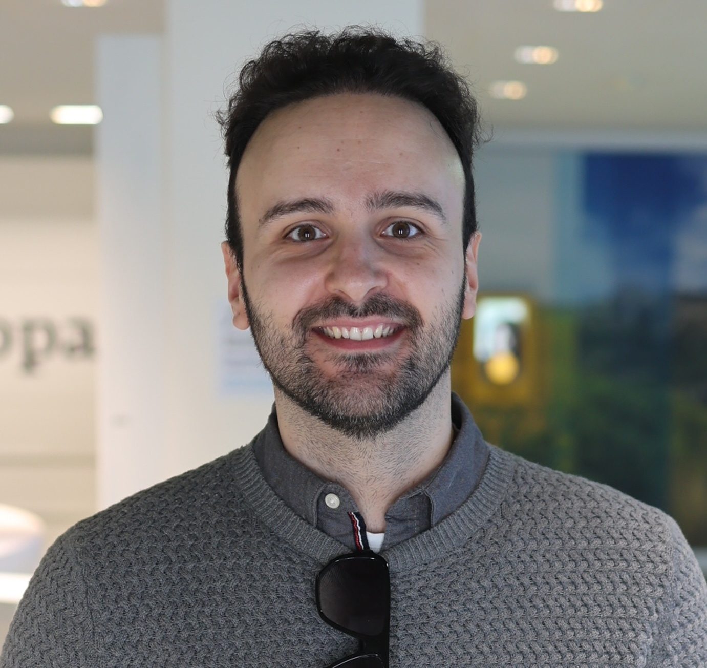

Apresentação
27 a 29 de Maio de 2026
Local: Auditório da Escola de Letras, Artes e Ciências Humanas (ELACH), Universidade do Minho
Modalidade: formato híbrido — presencial no Auditório da ELACH e online via Zoom.
As IV Jornadas Transculturais do Antigo Próximo-Oriente à Ásia Oriental constituem um espaço interdisciplinar dedicado ao estudo das culturas, línguas, religiões, mitologias, sistemas políticos, literatura e tradições do Antigo Próximo-Oriente, Mediterrâneo Antigo e Ásia Oriental.
O encontro reúne investigadores nacionais e internacionais das áreas dos Estudos Clássicos, Estudos Asiáticos, Egiptologia, História Antiga, Linguística, Arqueologia, Filosofia, Religião e Literatura Comparada, promovendo o diálogo transcultural entre diferentes tradições académicas e civilizacionais.
A edição de 2026 contará com conferências, comunicações científicas e cursos especializados dedicados a temas como línguas indo-europeias da Anatólia, Egiptologia, literatura e religião do mundo antigo, tradição bíblica e judaísmo rabínico, mitologia comparada, filosofia chinesa, redes diplomáticas e comerciais do Mediterrâneo Oriental, memória, poder e legitimidade política nas civilizações antigas.
Programa e Livro de Resumos
Inscrições nas Jornadas
As inscrições para as IV Jornadas Transculturais do Antigo Próximo-Oriente à Ásia Oriental serão disponibilizadas em breve.
Curso Pré-Jornadas
As Línguas Indo-Europeias da Antiga China — Uma Breve Introdução
Formador: António de Freitas (CEHUM)
Datas: 21 e 22 de Maio
Horário: 18h30 — 20h00
Modalidade: online — via Zoom
Inscrição no Curso Pré-Jornadas

O curso pré-jornadas propõe uma introdução ao estudo das línguas indo-europeias presentes na Antiga China, abordando o seu contexto histórico, linguístico e cultural.
A atividade integra a programação das IV Jornadas Transculturais do Antigo Próximo-Oriente à Ásia Oriental.
Conferencistas

Adriano Milho Cordeiro
CEHUM, Universidade do Minho

Alexandre Solcà
Societas Anatolica (França)

Alfonso Fernández Pousada
Asociación Galega de Exiptoloxía (Espanha)

Álvaro Salazar
Universidad Católica de Temuco (Chile)

Alwin Kloekhorst
Universiteit Leiden (Países Baixos)

Anabela Leal de Barros
CEHUM, Universidade do Minho

Benjamín Toro
Universidad de Concepción; Asociación Chilena de Estudios del Próximo Oriente Antiguo (Chile)

Cláudia Barros
CEHUM, Universidade do Minho; Universidad Pontificia Bolivariana (Colômbia)

Diego Machado
Unidade de Arqueologia da Universidade do Minho; LAB2PT; IN2PAST

Elizabeth Noreña Jaramillo
Universidad Pontificia Bolivariana (Colômbia)

Juliana Triana Palomino
UNIMINUTO (Colômbia)

Inmaculada Delage González
Universidad Internacional de La Rioja (Espanha)

João Mendes
CEHUM, Universidade do Minho

João Marcelo Martins
CEHUM, Universidade do Minho

Juan David Tobón Cano
Universidad Pontificia Bolivariana (Colômbia)

Maria Leonor Cordeiro
CEHUM, Universidade do Minho

Lorena Miralles Maciá
Universidad de Granada (Espanha)

Maria Eduarda Affonso
CEHUM, Universidade do Minho

Miguel Antonio Camelo
UNIMINUTO (Colômbia)
Naoko Yamagata
The Open University (Reino Unido)

Santiago Pereira
Universidade do Minho

Sergio Orlando Ramírez
UNIMINUTO (Colômbia)

Valeska Cariaga
Liceo Politécnico Héroes de la Concepción; Asociación Chilena de Estudios del Próximo Oriente Antiguo (Chile)
Organização
- António J. G. de Freitas (Coordenador; CEHUM-NETCULT, GELA)
- Adriano Milho Cordeiro (CEHUM-NETCULT, GELA)
- Anabela Leal de Barros (CEHUM-GELA)
- Cláudia Barros (CEHUM-NETCULT, GELA; UPB)
- Maria Leonor Cordeiro (CEHUM-NETCULT, GELA)